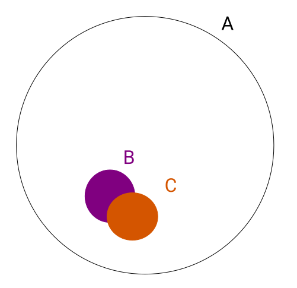

The Problem with Jaccard for Clustering
The Jaccard Index is a useful measure of similarity between two sets. It makes sense for any two sets, is efficient to compute at scale and it’s arithmetic complement is a metric. However for clustering it has one major disadvantage; small sets are never close to large sets.
Suppose you have sets that you want to cluster together for analysis. For example each set could be a website and the elements are people who visit that website. We want to group together similar websites.
There’s a niche blog B, and every single person who visits it visits a very popular news aggregator A. The Jaccard similarity is simply the number of people who visit website B divided by the number of people who visit site A, which is a very small number. However B will be quite similar to another niche blog C that a few of it’s members visit.
\[J(A,B) = {{|A \cap B|}\over{|A \cup B|}}\]

Depending on your application this might be the wrong metric; you really do want to emphasise that B is similar to A. Moreover we’ll only end up with similar sized objects in clusters which makes aggregation less effective. The Overlap Coefficient is another metric that instead of using the union of sets in the denominator, it uses the size of the smallest set. So in the case A contains B the overlap coefficient will be its maximum value of 1.
\[\operatorname{overlap}(A,B) = \frac{| A \cap B | }{\min(|A|,|B|)}\]
However there’s another problem with this; almost every person uses the Google search engine. So every site will have an overlap close to 1 with Google, which will make the clustering awful.
Ideas from Association Rule Learning
I find the terminology from Association Rule Learning (a.k.a market basket analysis) very useful here. Association Rule Learning tries to find groups of items that often go together, but here we’re just interested in the simple case of pairs. A transaction in Association Rules corresponds to a person in our example, and an item corresponds to a website. We’re looking at the association rules between websites \(A \Rightarrow B\) between websites. Note that our notation is dual to the usual for Association Rule Learning because it is in terms of itemsets and we are writing in terms of transactions.
The confidence of the rule \(A \Rightarrow B\) is the containment \(\frac{\lvert A \cap B \rvert}{\lvert A \rvert}\). This is the probability that someone visits website B given that they visited website A. So in our examples above our niche blog will have a confidence of 1 for visiting both the news aggregator and google. Note that the overlap coefficient is just \(\operatorname{overlap}(A,B) = \max ( A \Rightarrow B, B \Rightarrow A )\).
The lift of the rule \(A \Rightarrow B\) is how much more likely a user is to visit B given that they visited A. It’s \(\frac{ \lvert A \cap B \rvert \lvert U \rvert }{\lvert A \rvert \lvert B \rvert }\), where U is the total number of users. So suppose our website B has 100 users, the news aggregator A has 10,000 users and Google has 1 million users (which is all of them). Then the lift from B to A is 100, and the lift from B to Google is 1 (because it’s essentially independent). So the lift complements the confidence showing how specific the relationship is.
It seems at first glance lift could make a good measure of similarity. However consider the case when there’s only one person in the overlap; this might blow up the lift by pure chance. That’s why it’s often complemented by confidence and support (the size of the set relative to all users). Perhaps this instability could be resolved with a resampling approach; bootstrapping the lift (defaulting to 1 when there’s no overlap)?
I’m still not sure the right way to cluster this kind of scenario, but I’m reasonably convinced Jaccard similarity is not it.